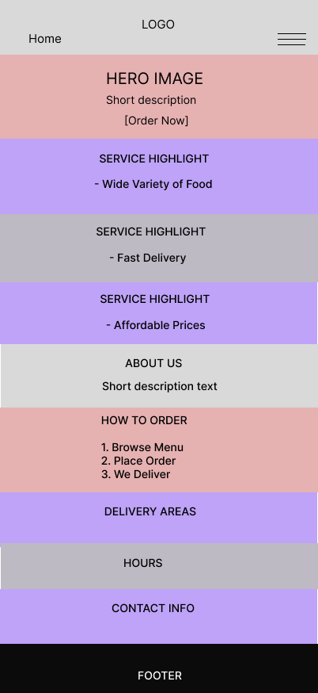
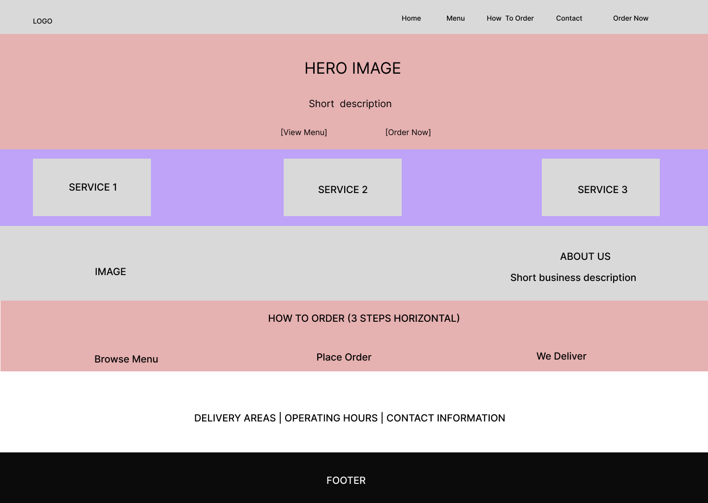

LocalEats Delivery
LocalEats Delivery is a food delivery service focused on bringing meals from nearby restaurants directly to customers within the local community. The name was chosen because it clearly communicates both the local focus and the primary service food delivery.
Optional domain availability: localeatsdelivery.com
The purpose of the LocalEats Delivery website is to provide clear and accessible information about the food delivery service. The site will inform users about available food options, delivery areas, operating hours, pricing, and how to place an order. It also serves as a contact point for customers who want to reach the business.
The following colors will be used throughout the website:
The mobile wireframe will display a vertical layout with the logo and navigation at the top, followed by a hero section, service highlights, ordering steps, and contact information stacked in a single column for easy scrolling.
The desktop wireframe will use a wider layout with a horizontal navigation bar, a large hero section, three-column service highlights, and clearly separated sections for ordering steps, delivery areas, and contact details.
